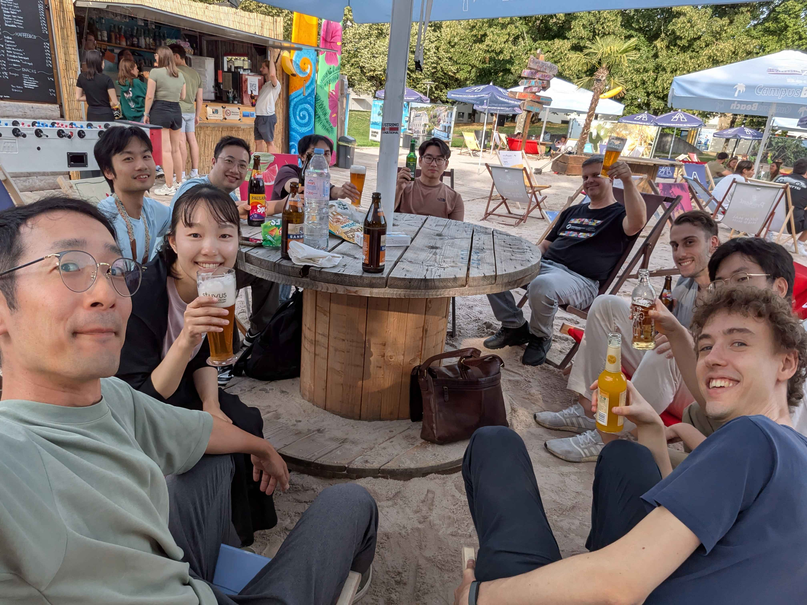

News
2026
One paper accepted at ACCV 2026.
Shohei Mori was appointed Associate Editor of IEEE Computer Graphics and Applications (CG&A).
One paper accepted in the IEEE Open Journal of Signal Processing (OJSP).
Three papers accepted at ACM VRST 2026.
Shohei Mori joined the faculty of the International Max Planck Research School for Intelligent Systems (IMPRS-IS).
One paper accepted at IEEE ISMAR 2026.
One paper accepted at ECCV 2026.
Haifan Zhang (Ph.D. student, IMPRS-IS, EXC IntCDC) joined the group.
One paper accepted in IEEE TVCG.
Kotoka Matsunaga (visiting researcher, Keio University, Japan) joined the group.
One of our demos was nominated for the Best Demo Award at IEEE VR 2026.
Shohei Mori and colleagues attended IEEE VR 2026. Shohei served as Program Chair, Session Chair, Doctoral Consortium Mentor, and Speed Mentorship Mentor.
One paper accepted in IEEE Access.
Yusuke Kitaura received a DAAX Good Experience Design Student Award on behalf of our ACM VRST 2026 co-authors.
One demo paper accepted at AHs 2026.
Five papers accepted at IEEE VR 2026: one journal paper, two posters, and two demos.
One paper accepted at VISAPP 2026.
2025
Suji Kang (visiting researcher, KAIST, Korea) joined the group.
Ayaka Yasunaga (visiting researcher, Keio University, Japan) rejoined the group.
Rinto Yagawa (visiting researcher, Keio University, Japan) joined the group.
Shohei Mori and colleagues attended IEEE ISMAR 2025.
One paper accepted at ACM SIGGRAPH Asia 2025.
One paper accepted at ACM VRST 2025.
Shohei Mori visited Keio University, Japan.
Our MICCAI 2025 paper was selected for a spotlight presentation.
Two papers accepted at IEEE ISMAR 2025: one journal paper and one conference paper.
Shohei Mori gave a keynote talk at the EURASIP Summer School XRTX 2025.
One paper accepted in IEEE TVCG.
One paper accepted at MICCAI 2025.
Yoko Nakajima (visiting researcher, Keio University, Japan) joined the group.
One paper accepted at IEEE ICIP 2025.
Shohei Mori will serve as Program Co-Chair of IEEE VR 2026.
Shohei Mori served as Student Volunteer Co-Chair at ACM CHI 2025.
Our work was featured by TU Graz Press and Kronen Zeitung.
Shohei Mori will serve as Associate Paper Co-Chair at IEEE ISMAR 2025.
Shohei Mori served as Session Chair and Doctoral Consortium Mentor at IEEE VR 2025.
Prof. Asako Kimura (Ritsumeikan University, Japan) visited us and gave a talk.
Shohei Mori and colleagues held the tutorial RF4XR at IEEE VR 2025.
Prof. Hideo Saito (Keio University, Japan) visited us and gave a talk.
Shiori Ueda, Hideo Saito, and Shohei Mori received a SIG-MR Award.
Ayaka Yasunaga (visiting scholar, Keio University, Japan) joined the group.
2024
Shohei Mori gave a keynote talk at APMAR 2024.
Shiori Ueda (visiting scholar, Keio University, Japan) joined the group.
The group was founded at VISUS, University of Stuttgart, Germany.